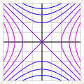

Section9.7Common graphs in Two and Three Dimensions
Motivating Questions
What are some sample graphs in two and three dimensions that can be used throughout our study of multivariable ideas?
Something Here?
Preview Activity9.7.1.
For each of the following equations, you should:
Find all \(x\)-intercepts
Find all \(y\)-intercepts
Identify the shape of the graph (if you know it)
Identify all points where the graph will intersect with the vertical line \(x=2\)
Identify all points where the graph will intersect with the horizontal line \(y=-4\)
(a)
\(\frac{x^2}{9}+\frac{y^2}{25}=1\)
Solution.
(b)
\(\frac{y^2}{4}-\frac{x^2}{1}=1\)
Solution.
(c)
\(x=2y^2\)
Solution.
(d)
\(\frac{y^2}{9}-\frac{x^2}{25}=0\)
Solution.
We have seen how the distance formula leads to the equation of a sphere and how the idea of flat one and two dimensional graphs gave rise to lines and planes. In this section, we will introduce some other curves and surfaces that will be used throughout the rest of this text as examples. These objects will allow us to have graphs with a variety of geometric features while still being algebraically simple.
Subsection9.7.1Conic Sections
Go over conic section forms (either put a reference to a full presentation of conics or make an appendix with activities to go through these details) Conic sections are graphs of the form \(Ax^2+Bxy+Cy^2+Dx+Ey+F=0\) and can also be seen as the intersection of a plane and a cone. Applications and uses in optics, engineering We will look at the three basic shapes then see how common transformations work on the graphs and equations for those graphs.
Talk about Ellipse first. Show base equation x^2+y^2=1. Go over how ellipse is transformed version of this? Talk about center, horizontal stretch, vertical stretch. In appendix, talk about sum of distances to foci as being constant. Reflective properties that focus reflect to other focus.
Hyperbola. Start with x^2-y^2=1. Show vertices, center, asypmtotes. Talk about switching the roles of x and y. Show horizontal and vertical stretches take care of everything. Talk aobut shape and how you do not have two parabolas.
Parabola. Talk about features of y=x^2. Direction of parabola given by linear term.
translation of coordinates. Activity: What value of x will compute to x=0? y to y=0? Rotation in appendix?
Subsection9.7.2Cylinder Surfaces
what does x^2+y^2=1 look like in 2D? 3D? Cylinder surfaces are generated by a curve (called the generating curve) and extend along rulings. x^2+y^2=1 has a circle generating curve in xy-plane and rulings extend in z-direction. Only the xy values make a point satisfy (or not satisfy) the defining equation. No choice of z has an effect.
Subsection9.7.3Quadric Surfaces
activity about understanding the plot of x^2/4+y^2/9-z^2=1. Find intercepts, traces on xy, xz, and yz planes. Intersections with z=1, z=-2, z=sqrt{3}, x=3,x=0. Show several plots. Which one of these plots has the features you state as answers above. Do the same with x^2/4-y^2/9-z^2=1
go over the other quadric surfaces.
will go over this more later but only a few of these grapsh can be expressed with one coordinate a function of the others. Talk about what this means briefly and then reference the later work.
Subsection9.7.4A gallery of functions
We end this section by considering a collection of functions and illustrating their graphs and some level curves.
Figure9.7.1.\(z=x^2+y^2\)
Figure9.7.2.\(z=4-(x^2+y^2)\)
Figure9.7.3.\(z=\sqrt{x^2+y^2}\)

Figure9.7.4.\(z=x^2-y^2\)
Figure9.7.5.\(z=\sin(x)+\sin(y)\)
Figure9.7.6.\(z=y^2 - x^3 + x\)
Figure9.7.7.\(z=xye^{-x^2-y^2}\)
Subsection9.7.5Summary
A function \(f\) of several variables is a rule that assigns a unique number to an ordered collection of independent inputs. The domain of a function of several variables is the set of all inputs for which the function is defined.
In \(\R^3\text{,}\) the distance between points \(P=(x_0, y_0, z_0)\) and \(Q=(x_1, y_1, z_1)\) (denoted as \(|PQ|\)) is given by the formula
A trace of a function \(f\) of two independent variables \(x\) and \(y\) is a curve of the form \(z = f(c,y)\) or \(z = f(x,c)\text{,}\) where \(c\) is a constant. A trace tells us how the function depends on a single independent variable if we treat the other independent variable as a constant.
A level curve of a function \(f\) of two independent variables \(x\) and \(y\) is a curve of the form \(k = f(x,y)\text{,}\) where \(k\) is a constant. A level curve describes the set of inputs that lead to a specific output of the function.
\((x,y) = \left(-1,3\right)\) to find \(f(-1,3) = -1 + 3(-1)^{5} = -4\text{.}\) Similarly, with \((x,y) = \left(-3,3\right)\) we find \(f(-3,3) = -3 + 3(-3)^{5} = -732\text{.}\) Finally, for \((x,y) = \left(-5,1\right)\) we find \(f(-5,1) = -5 + 1(-5)^{5} = -3130\text{.}\)
2.
Sketch a contour diagram of each function. Then, decide whether its contours are predominantly lines, parabolas, ellipses, or hyperbolas.
\(\displaystyle z = x^2 + 5 y^2\)
\(\displaystyle z = - 5 x^2\)
\(\displaystyle z = x^2 - 3 y^2\)
\(\displaystyle z = y - 4 x^2\)
Solution.
SOLUTION
1. The contours have equation \(k = x^2+ 5 y^2\) , which (for \(k >0\)) represent ellipses in the \(xy\)- plane.
2. The contours have equation \(k = -5 x^2\text{.}\) For \(k \le 0\text{,}\) these equations are equivalent to \(x = \pm \sqrt{-k/5}\text{,}\) which represent vertical lines in the \(xy\)- plane.
3. The contours have equation \(k = x^2- 3 y^2\) , which represent hyperbolas in the \(xy\)- plane.
4. The contours have equation \(k = y-4 x^2\) , which represent parabolas in the \(xy\)- plane.
3.
Match the surfaces with the verbal description of the level curves by placing the letter of the verbal description to the left of the number of the surface.
\(\displaystyle z = 2x^2 + 3y^2\)
\(\displaystyle z = \frac{1}{x-1}\)
\(\displaystyle z = xy\)
\(\displaystyle z = \sqrt{(x^2 + y^2)}\)
\(\displaystyle z = x^2 + y^2\)
\(\displaystyle z = \sqrt{(25 - x^2 - y^2)}\)
\(\displaystyle z = 2x + 3y\)
a collection of equally spaced concentric circles
two straight lines and a collection of hyperbolas
a collection of unequally spaced concentric circles
a collection of unequally spaced parallel lines
a collection of equally spaced parallel lines
a collection of concentric ellipses
4.
The domain of the function \(f(x,y) = \sqrt x + \sqrt y\) is
5.
Find the equation of the sphere centered at \((-6, 3, -8)\) with radius 7. Normalize your equations so that the coefficient of \(x^2\) is 1.
= 0.
Give an equation which describes the intersection of this sphere with the plane \(z = -7\text{.}\)
= 0.
6.
(A) If the positive z-axis points upward, an equation for a horizontal plane through the point \(\left(-2,-2,0\right)\) is
.
(B) An equation for the plane perpendicular to the x-axis and passing through the point \(\left(-2,-2,0\right)\) is
.
(C) An equation for the plane parallel to the xz-plane and passing through the point \(\left(-2,-2,0\right)\) is
.
7.
A car rental company charges a one-time application fee of 30 dollars, 60 dollars per day, and 15 cents per mile for its cars.
(a) Write a formula for the cost, \(C\text{,}\) of renting a car as a function of the number of days, \(d\text{,}\) and the number of miles driven, \(m\text{.}\)
\(C =\)
(b) If \(C = f(d, m)\text{,}\) then \(f(3, 570) =\)
8.
(a) Describe the set of points whose distance from the y-axis equals the distance from the xz-plane.
A cylinder opening along the y-axis
A cylinder opening along the x-axis
A cone opening along the z-axis
A cone opening along the y-axis
A cone opening along the x-axis
A cylinder opening along the z-axis
(b) Find the equation for the set of points whose distance from the y-axis equals the distance from the xz-plane.
\(\displaystyle y^2 + z^2 = r^2\)
\(\displaystyle z^2 = x^2 + y^2\)
\(\displaystyle x^2 + y^2 = r^2\)
\(\displaystyle x^2 = y^2 + z^2\)
\(\displaystyle x^2 + z^2 = r^2\)
\(\displaystyle y^2 = x^2 + z^2\)
9.
For each surface, decide whether it could be a bowl, a plate, or neither. Consider a plate to be any fairly flat surface and a bowl to be anything that could hold water, assuming the positive z-axis is up.
\(\displaystyle z = x^2 + y^2\)
\(\displaystyle z = - \sqrt{ 4 - x^2 - y^2 }\)
\(\displaystyle z = 1 - x^2 - y^2\)
\(\displaystyle z = 4\)
\(\displaystyle x + y + z = 2\)
10.
Consider the concentration, C, (in mg/liter) of a drug in the blood as a function of the amount of drug given, x, and the time since injection, t. For \(0 \leq x \leq 6\) mg and \(t \geq 0\) hours, we have
\begin{equation*}
C = f(x,t) = 22te^{-\left(6-x\right)t}
\end{equation*}
\(f(3,2) =\)
Give a practical interpretation of your answer: \(f(3, 2)\) is
the amount of a 3 mg dose in the blood 2 hours after injection.
the change in concentration of a 3 mg dose in the blood 2 hours after injection.
the concentration of a 2 mg dose in the blood 3 hours after injection.
the concentration of a 3 mg dose in the blood 2 hours after injection.
the change in concentration of a 2 mg dose in the blood 3 hours after injection.
the amount of a 2 mg dose in the blood 3 hours after injection.
11.
A manufacturer sells aardvark masks at a price of $210 per mask and butterfly masks at a price of $520 per mask. A quantity of a aardvark masks and b butterfly masks is sold at a total cost of $600 to the manufacturer.
(a) Express the manufacturers profit, P, as a function of a and b.
\(P(a,b) =\) dollars.
(b) The curves of constant profit in the ab-plane are
lines
parabolas
circles
hyperbolas
ellipses
12.
Consider the concentration, \(C\text{,}\) in mg per liter (L), of a drug in the blood as a function of \(x\text{,}\) the amount, in mg, of the drug given and \(t\text{,}\) the time in hours since the injection. For \(0 \leq x \leq 4\) and \(t \geq 0\text{,}\) we have \(C = f(x,t) = t e^{-t(5-x)}\text{.}\)
Graph the following two single variable functions on a separate page, being sure that you can explain their significance in terms of drug concentration.
(a)\(f(1,t)\)
(b)\(f(x,1)\)
Using your graph in (a), where is \(f(1,t)\)
a maximum? \(t =\)
a minimum? \(t =\)
Using your graph in (b), where is \(f(x,1)\)
a maximum? \(x =\)
a minimum? \(x =\)
Solution.
(a) Holding \(x\) fixed at 1 means that we are considering an injection of 1 mg of the drug; letting \(t\) vary means we are watching the effect of this dose as time passes. Thus the function \(f(1,t)\) describes the concentration of the drug in the blood resulting from a 1 mg injection as a function of time. The figure below shows the graph of \(f(1,t)=t\,e^{-4 t}\text{.}\) Notice that the concentration in the blood from this dose is at a maximum at 0.25 hour after injection, and that the concentration in the blood eventually approaches zero. The initial concentration is 0, so the minimum occurs at \(t = 0\text{.}\)(b) Holding \(t\) fixed at 1 means that we are focusing on the blood 1 hour after the injection; letting \(x\) vary means we are considering the effect of different doses at that instant. Thus, the function \(f(x,1)\) gives the concentration of the drug in the blood 1 hour after injection as a function of the amount injected. The figure below shows the graph of \(f(x,1)= e^{-(5-x)}\text{.}\) Notice that \(f(x,1)\) is an increasing function of \(x\text{.}\) This makes sense: If we administer more of the drug, the concentration in the bloodstream is higher. In particular, this means that the maximum concentration occurs at the maximum value of \(x\text{,}\) 4, and the minimum at \(x = 0\text{.}\)
13.
By setting one variable constant, find a plane that intersects the graph of \(z = 2y^{2}-6x^{2}+3\) in a:
(a) Parabola opening upward: the plane =
(Give your answer by specifying the variable in the first answer blank and a value for it in the second.)
(b) Parabola opening downward: the plane =
(Give your answer by specifying the variable in the first answer blank and a value for it in the second.)
(c) Pair of intersecting straight lines: the plane =
(Give your answer by specifying the variable in the first answer blank and a value for it in the second.)
Solution.
(a) If \(x\) is constant, we get \(z = 2 x^2 + a\text{,}\) for some value of \(a\text{,}\) so that the cross-sections are upward-opening parabolas. (b) If \(y\) is constant, we get \(z = -6 y^2 + a\text{,}\) for some value of \(a\text{,}\) so that the cross-sections are downward-opening parabolas. (c) If \(z\) is constant and equal to 3, we get \(y = \pm \sqrt{3} x\text{,}\) which are two intersecting straight lines.
14.
Find the equation of each of the following geometric objects.
The plane parallel to the \(xy\)-plane that passes through the point \((-4,5,-12)\text{.}\)
The plane parallel to the \(yz\)-plane that passes through the point \((7, -2, -3)\text{.}\)
The sphere centered at the point \((2,1,3)\) and has the point \((-1,0,-1)\) on its surface.
The sphere whose diameter has endpoints \((-3,1,-5)\) and \((7,9,-1)\text{.}\)
Solution.
A plane parallel to the \(xy\)-plane is horizontal and has an equation of \(z=-12\text{.}\)
A plane parallel to the \(yz\)-plane is vertical and has an equation of \(x=7\text{.}\)
We have the center of the sphere, now we need the radius. To find the radius, we find the distance between the two points. \(D = \sqrt{((-1)-(2))^2 + ((0)-(1))^2 + ((-1)-(3))^2} = \sqrt{26}\text{.}\)
The equation of the sphere centered at \((2,1,3)\) with a radius of \(sqrt{26}\) is \((x-2)^2 + (y-1)^2 + (z-3)^2 = 26\text{.}\)
We need to find the center of the sphere which is the midpoint between the given endpoints. The midpoint is \((\frac{(-3)+(7)}{2},\frac{(1)+(9)}{2},\frac{(-5)+(-1)}{2}) = (2,5,-3).\text{.}\)
The radius is half the distance of the diameter or the distance from the center to an endpoint. \(D = \sqrt{((2)-(-3))^2 + ((5)-(1))^2 + ((-3)-(-5))^2} = \sqrt{45}\text{.}\)
The equation of the sphere centered at \((2,5,-3)\) with a radius of \(sqrt{45}\) is \((x-2)^2 + (y-5)^2 + (z+3)^2 = 45\text{.}\)
15.
The Ideal Gas Law, \(PV = RT\text{,}\) relates the pressure (\(P\text{,}\) in pascals), temperature (\(T\text{,}\) in Kelvin), and volume (\(V\text{,}\) in cubic meters) of 1 mole of a gas (\(R = 8.314 \ \frac{\text{J} }{\text{ mol } \ \text{K} }\) is the universal gas constant), and describes the behavior of gases that do not liquefy easily, such as oxygen and hydrogen. We can solve the ideal gas law for the volume and hence treat the volume as a function of the pressure and temperature:
Explain in detail what the trace of \(V\) with \(P=1000\) tells us about a key relationship between two quantities.
Explain in detail what the trace of \(V\) with \(T=5\) tells us.
Explain in detail what the level curve \(V = 0.5\) tells us.
Use 2 or three additional traces in each direction to make a rough sketch of the surface over the domain of \(V\) where \(P\) and \(T\) are each nonnegative. Write at least one sentence that describes the way the surface looks.
Based on all your work above, write a couple of sentences that describe the effects that temperature and pressure have on volume.
Solution.
\(V(1000,T) = \frac{8.314T}{1000}\) represents the volume of 1 mole of a gas at a temp T, kelvin, when the pressure is 1000 pascals. This is a linear function with a positive slope of \(\frac{8.314}{1000}\text{.}\) As the temperature increases, the volume increases at a constant rate of \(\frac{8.314 \frac{J}{mol k}}{1000 pascals}\text{.}\)
\(V(P,5) = \frac{8.314(5)}{P}\) represents the volume of 1 mole of a gas with a pressure of P, pascals, when the temperature is 5 Kelvin. This is a rational function. As the pressure increases, the volume decreases and approaches zero.
\(V(P,T) = 0.5\) represents the combinations of temperature and pressure that result in a volume of 1 mole of gas of 0.5 \(m^{3}\text{.}\)
\(V(500,T), V(1000,T), and V(2000,T)\) are traces that are linear functions with a positive slope.
\(V(P,5), V(P,10), and V(P,20)\) are traces that are positive rational functions for \(P \geq 0\text{.}\)
These traces indicate the graph of \(V\) looks like a sheet of paper angling up through the \(P\) axis in the first octant that bends up towards the \(VP\)-plane.
The volume is directly proportional to the temperature and inversely proportional to the pressure. As temperature increases, the volume increases. As pressure increases, the volume decreases.
16.
When people buy a large ticket item like a car or a house, they often take out a loan to make the purchase. The loan is paid back in monthly installments until the entire amount of the loan, plus interest, is paid. The monthly payment that the borrower has to make depends on the amount \(P\) of money borrowed (called the principal), the duration \(t\) of the loan in years, and the interest rate \(r\text{.}\) For example, if we borrow $18,000 to buy a car, the monthly payment \(M\) that we need to make to pay off the loan is given by the formula
Find the monthly payments on this loan if the interest rate is 6% and the duration of the loan is 5 years.
Create a table of values that illustrates the trace of \(M\) with \(r\) fixed at 5%. Use yearly values of \(t\) from 2 to 6. Round payments to the nearest penny. Explain in detail in words what this trace tells us about \(M\text{.}\)
Create a table of values that illustrates the trace of \(M\) with \(t\) fixed at 3 years. Use rates from 3% to 11% in increments of 2%. Round payments to the nearest penny. Explain in detail what this trace tells us about \(M\text{.}\)
Consider the combinations of interest rates and durations of loans that result in a monthly payment of $200. Solve the equation \(M(r,t) = 200\) for \(t\) to write the duration of the loan in terms of the interest rate. Graph this level curve and explain as best you can the relationship between \(t\) and \(r\text{.}\)
Consider the function \(h\) defined by \(h(x,y) = 8 - \sqrt{4 - x^2 - y^2}\text{.}\)
What is the domain of \(h\text{?}\) (Hint: describe a set of ordered pairs in the plane by explaining their relationship relative to a key circle.)
The range of a function is the set of all outputs the function generates. Given that the range of the square root function \(g(t) = \sqrt{t}\) is the set of all nonnegative real numbers, what do you think is the range of \(h\text{?}\) Why?
Choose 4 different values from the range of \(h\) and plot the corresponding level curves in the plane. What is the shape of a typical level curve?
Choose 5 different values of \(x\) (including at least one negative value and zero), and sketch the corresponding traces of the function \(h\text{.}\)
Choose 5 different values of \(y\) (including at least one negative value and zero), and sketch the corresponding traces of the function \(h\text{.}\)
Sketch an overall picture of the surface generated by \(h\) and write at least one sentence to describe how the surface appears visually. Does the surface remind you of a familiar physical structure in nature?
Solution.
We cannot have a negative value under the square root. Therefore \(4 - \left( x^{2} + y^{2} \right) \geq 0\text{,}\) so \(x^{2} + y^{2} \leq 4\text{.}\)
The maximum value of the square root is equal to 2 when \(x=0, y=0\text{.}\) The minimum value of the square root is 0. Subtract these values from 8 to a range of \(6 \leq h(x,y) \leq 8\text{.}\)
Subtract 8 from both sides to get \(h - 8 = - \sqrt{4 - x^2 - y^2}\text{.}\)
Divide by -1 to get \(8 - h = \sqrt{4 - x^2 - y^2}\text{.}\)
Square both side to get \((8-h)^2 = 4 -x^2 -y^2\text{.}\)
Then \(x^2 + y^2 = 4 - (8-h)^2\text{.}\)
This is the formula for a circle centered at \((0,0)\) with a radius of \(\sqrt{4 - (8-h)^2}\text{.}\)
It follow from part d that if \(x^2 + y^2 = 4 - (8-h)^2\text{,}\) then \(x^2 = 4 - (8-h)^2 - y^2\) and \(x = - \sqrt{4 - (8-h)^2 - x^2}\text{.}\) Then choose y values to graph the traces.
It follows from e that \(y = - \sqrt{4 - (8-h)^2 - x^2}\text{.}\) Then choose x values to graph the traces.
The surface is a bowl opening up with a vertex \((0,0,6)\) with a maximum height of 8.